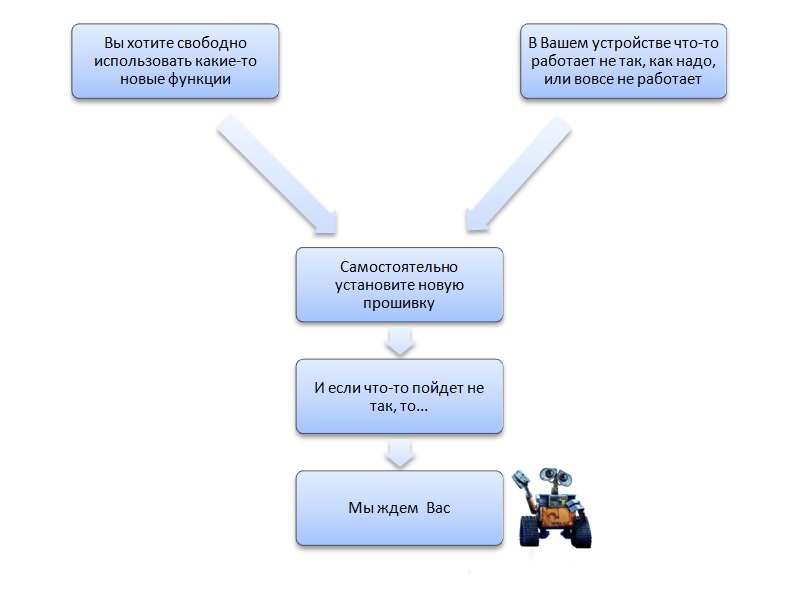

Услуги
Диагностика телефонов и планшетов БЕСПЛАТНО!
Ремонт телефонов, смартфонов и коммуникаторов, даже китайских
Ремонт планшетных компьютеров, ноутбуков и нетбуков любых производителей
Ремонт и обслуживание домашних персональных компьютеров
Ремонт защищенных телефонов Ginzzu
Ремонт электронных книг, навигаторов
Ремонт видеорегистраторов
Ремонт антирадаров
Ремонт ЖК мониторов
Прошивка телефонов
Прошивка планшетов
Закачка карт на GPS- навигаторы
Снятие графического ключа без потери данных
Заказ деталей на большинство моделей телефонов и планшетов
Изготовление сайтов - визиток под заказ
Печать фото
Печать на дисках
Выезд на дом в пределах города
ГАРАНТИЯ на все виды работ
Полезные советы
Новые прошивки, мифы и правдаЧитать полностью...
Вопрос необходимости обновления прошивок мобильных устройств стандартно разделяет пользователей смартфонов на два кардинально противоположных «лагеря»: одни скачивают все обновления ОС, как только они появляются, другие же держатся буквально руками и ногами за старые, заводские прошивки. Если по какой-то причине Вам все же требуется такая прошивка, то обязательно произведите резервное копирование данных устройства, а так же скопируйте образ предыдущей прошивки. Во всех остальных случаях установка обновленных версий ОС необходима, потому что:  История от мастераЧитать полностью...
Сегодня мне захотелось рассказать о том, как я переделывал работу одного «специалиста», пытавшегося восстановить телефон после его падения в воду. 3. После этого я пропаял там, где окислы отошли вместе с припоем, чтобы восстановить контакт на элементах На сегодняшний день этот многострадальный «Хуавейчик» вернулся к жизни, он ожил, но ему еще предстоит пройти долгий путь «реабилитации» для полного восстановления. И я точно знаю, что мы победим. Домашний ПК или ноутбук греется? Зависает? Тормозит? Выход есть!
Читать полностью...
Невозможно встретить хоть одного юзера, который никогда в своей жизни не сталкивался с проблемой перегрева ноутбука, замедления его работы или даже его зависания. Что делать в этом случае? Что делать, если на телефон или ноутбук попала вода
Читать полностью...
Никто из нас не застрахован от неудач. И, конечно же, каждому человеку тяжело осознавать, что его любимый телефон или ноутбук больше не вернется к «жизни» из-за контакта с водой. 7 простых правил, как продлить «жизнь» аккумулятору телефона или планшета
Читать полностью...
Гаджеты – неотъемлемая часть настоящего времени. Именно по этой причине довольно сложно представить себе современного школьника, студента или взрослого, состоявшегося человека без какого-нибудь «хитрого» устройства в кармане или же сумке. Покупка продукции Apple с рук
Читать полностью...
Люди часто спрашивают меня, стоит ли им покупать тот или иной аппарат с рук. Вот поэтому я и решил написать небольшую статейку для тех, кто задумался над целесообразностью подобной покупки, и, в частности, для тех, кто хочет купить себе подержанный iPhone или iPad.
Кто прав, а кто нет в этой истории, давайте разбираться.
1. Обновления не нужны совершенно
Это отчасти правда, если:
• прошивка неофициальная;
• прошивка еще не прошла тестовый период.
Однако Вам никто не мешает установить такую прошивку, просто риск столкнуться с нестабильной работой некоторых функций устройства у бета-тестеров выше, чем у пользователей, выбравших уже протестированную версию.
• новая прошивка улучшает производительность устройства;
• модернизирует его интерфейс;
• улучшают безопасность системы. (Подобные обновления для Android выходят примерно раз в месяц, и если их не использовать, то можно очень многое потерять).
2. Обновления нужны всегда
Это также не совсем верное утверждение, если:
• Вы – владелец китайского смартфона;
Обычно для подобной техники выпускается два варианта обновлений: для международного рынка и рынка Китая, поэтому не угадать с ПО очень легко.
• Вы – владелец «яблочного» устройства, бездумно устанавливающий все обновления.
Для примера достаточно вспомнить довольно нашумевшую историю с обновлением iOS 9.2.1, которое спровоцировало процесс «окирпичивания» iPhone с ранее заменёнными при ремонте сенсорами Touch ID.
Так вот, апдейт для мобильных устройств необходим, но и спешить с ним не нужно. Ведь ошибки допускают все, начиная от производителей флагманов А-бренда и заканчивая производителями дешевых смартфонов.
Поэтому наиболее оптимальный алгоритм действий такой:

Предыстория проста: ко мне в Мастерскую обратилась клиентка, телефон которой полгода (полгода, Карл!!!) пролежал дома на полочке после того, как она случайно его «искупала». Разумеется, клиентка пыталась его отдать в ремонт, однако получила заключение «профессионала»: «Не жилец!»
Когда этот несчастный Huawei Honor 4C оказался у меня в руках, мне сразу стало интересно, что я смогу с ним сделать.
1. И для начала, как ни странно, я его разобрал, чтобы оценить ущерб нанесенный водой. Вид конечно был довольно удручающий, во-первых, следы застарелой окиси были повсюду, что свидетельствовало о том что плату не отмывали и не пытались, во-вторых, во многих местах были видны следы пайки. В общем я приступил к восстановлению.
2. Начал с того что отмыл как следует все окислы.


4. Проверил телефон от блока питания, и... обнаружил две приятные неожиданности: первая и главная то что нет никакого потлебления(что свидетельствует об отсуствии коротких замыканий или "пробитых" элементах в цепи питания), а второе это то что есть реакция на кнопку включения. Вот только экран так и не показывал.
5. Дальнейшее обследование платы, кроме пары "снесенных" конденсаторов не показало, их я конечно восстановил, но результат не изменился. В итоге было принято решение приобрести новый экранный модуль для проверки. Какого было мое удивление, что телефон не просто запустился, а включился до рабочего стола.

Надеюсь, Вы смогли извлечь из этой небольшой истории правильный урок. Всем добра и берегите свои телефончики

Все советы по данному вопросу, которыми буквально перенасыщен интернет, в большинстве своем рекомендуют устранить подобную трудность самостоятельно.
Однако опыт мастеров нашего СЦ показывает, что не всегда попытка все сделать своими руками (в частности, избавиться от причин, приводящих к ситуации «греется ноутбук») – правильное решение.
Если и Вы сегодня по какой-то причине не хотите или не можете обратиться за профессиональной помощью в мастерскую по ремонту электроники, то воспользуйтесь простыми рекомендациями, чтобы облегчить «самочувствие» своего ноутбука или, как вариант, домашнего ПК.
Итак, ноутбук греется, зависает или тормозит по разным причинам.
1. Вирусы
2. Захламление памяти компьютера временными файлами
3. Перегрев
4. Выход из строя жесткого диска
И в первую очередь Вам нужно определить корень «зла». Допустим, Вы уверены, что Ваша техника сильно греется, поскольку она подверглась вирусной атаке. В этом случае Вам необходимо либо установить антивирусную программу (Антивирус Касперского, Dr.Web, NOD32), либо обновить ее.
Подобные программы элементарны в использовании и с помощью простых подсказок они помогают решить проблему с вирусами, а, значит, и проблемку перегрева ноутбука.
Если же Вы думаете, что причина зависания Вашей техники кроется в большом количестве «мусора», хранящемся в ее памяти, то используйте программу CCleaner или другие подобные продукты.
Правда, учтите, что не все умеют ими правильно пользоваться. Ведь при базовых настройках обычная чистка системы в CCleaner представляет собой процесс переноса воды в решете.
То есть все, что удаляется с ее помощью с ноутбука, который греется (история, кэш, пароли и т.д.), восстанавливается при повторном запуске соответствующих приложений
Устранить проблему зависания или торможения компьютера, а так же перегрева ноутбука в этом случае можно только путем освобождения места на диске после полного удаления приложений из системы.
Кстати, отключение ненужных элементов, например, планировщика задач, так же способствует ускорению работы системы.
В том же случае, если Вы подозреваете, что ноутбук греется в связи с засорением системы охлаждения, то проведите ее домашнюю чистку.
Как это сделать?
• Снимите крышку ноутбука, аккуратно открутив болты или открыв специальные механизмы
• Отсоедините внутренние элементы домашнего ПК, за исключением запаянных
• Очистите вентиляцию, радиатор, материнскую плату, процессор и видеокарту ноутбука (компьютера) от загрязнений с помощью мягкой безворсовой ткани, кисточки или пылесоса
• Обновите термопасту на поверхности процессора (аккуратно удалите старый слой и нанесите новый)
• Очистите клавиатуру и монитор домашнего ПК с помощью специальных салфеток
• Соберите ноутбук
• Проверьте его работу
Если Вы смогли устранить проблему и Ваш ноутбук больше не греется, то это замечательно. Если же нет, то отправляйтесь в СЦ с надеждой, что своими манипуляциями Вы не нанесли еще больший вред собственной технике

Можно ли помочь утонувшему «любимцу» самостоятельно? И что для этого нужно сделать?
В самом начале, перед тем, как впадать в панику, вспомните: может быть Ваш телефон защищен от влаги и не стоит переживать? :o) Или у Вас хороший чехол, который при незначительном контакте с водой защищает аппарат?
Все, что остается сделать в этом случае – достать телефон, протереть его и заглянуть под заднюю крышку (вдруг вода все-таки попала туда).
Если же это не так, и Ваш любимый электронный друг «умирает» на глазах, то четко и без промедления выполните следующие шаги:
1. Достаньте телефон/ноутбук из воды.
2. Выключите аппарат и выньте аккумулятор.
3. Разберите телефон или ноутбук (снимите заднюю панель, вытащите аккумулятор, CMOS-батарейку из материнской платы, SIM-карту, снимите кнопки с клавиатуры и т.д.)
ВАЖНО: если Вы не уверены в своей памяти, то постарайтесь каким-то образом запечатлеть весь процесс разборки. В противном случае на этапе сборки электронной техники Вы можете столкнуться с большим количеством вопросов.
4. Протрите сухой, хорошо впитывающей влагу тканью все, что Вы смогли разобрать
В том случае, если на телефон/ноутбук попала не просто вода, а какая-нибудь цветная или липкая жидкость, например, сок, сладкий чай или газировка, то протрите все доступные Вам поверхности спиртом или дистиллированной водой.
5. Просушите каждую деталь в отдельности.
Как это можно сделать? Существует несколько способов сушки техники, подвергшейся воздействию воды:
• Естественная сушка в течение 1-2 дней (когда аппарат высыхает сам под воздействием воздуха)
• Сушка с помощью фена (есть риск расплавить какие-нибудь элементы или загнать воду еще дальше)
• Сушка с помощью риса
Это довольно смешной и странный способ сушки телефонов, который, как ни парадоксально, используют многие люди.
6. Соберите последовательно все разобранные детали.
7. Проверьте работоспособность телефона или ноутбука.
Если после всех проделанных манипуляций Ваша техника не подает «признаков жизни», то у Вас остается два пути: обратиться в СЦ или отправиться в магазин за новым приобретением. :o)

Разумеется, каждый владелец новенького телефона и планшета хочет, чтобы его новый «друг» оставался с ним как можно дольше, однако не у всех это получается.
Почему? Одной из наиболее распространенных причин обращения людей в мастерские по ремонту техники являются проблемы, связанные с аккумуляторами.
Как не прискорбно, но литий-ионные аккумуляторы (Li-Ion), как и все в этом мире, имеют свой срок «жизни». Средний срок их эксплуатации (в идеале) – 2-3 года.
Можно ли продлить срок эксплуатации аккумуляторов? Можно, правда, при соблюдении довольно простых правил:
1. не используйте телефон или планшет при довольно высоких и низких температурах, а так же в условиях повышенной влажности;
Если зимой Ваш телефон разрядился, пока Вы находились на улице, то по возвращению домой не включайте его в сеть. Подождите, пока аккумулятор не прогреется, и только после этого подключайте зарядное устройство.
2. не оставляйте Ваш аппарат на зарядке на всю ночь, аккумуляторы данного типа не «любят» перезаряжаться;
3. не ждите, когда батарея полностью разрядится, полный разряд просто уменьшает срок ее службы;
Запомните: лучше не разряжать батарею до полного выключения устройства. Ведь так называемый «глубокий разряд» не просто вредит «здоровью» батареи, но и может привести к ее «смерти».
По какой причине? Все просто: во время полного разряда в литий-ионных аккумуляторах происходят процессы, которые влекут за собой необратимые последствия.
4. не храните выключенный аппарат с полностью заряженной батареей;
При наилучшем раскладе уровень заряда должен колебаться в пределах 40-50%.
5. обязательно проверяйте дату изготовления аккумулятора до покупки техники;
Вам наверняка не известно, что Li-Ion аккумуляторы потихоньку «стареют», даже если их не используют. В связи с чем если Вы приобретете новый аппарат, но с «умирающей» батареей, то рассчитывать на его долгий срок службы не стоит.
6. доверяйте замену встроенных аккумуляторов только профессионалам;
7. по возможности используйте только оригинальные аккумуляторы от производителя.
Разумеется, использовать оригинальную батарею можно не всегда. Однако не экономьте при замене аккумулятора, если это возможно, чтобы в итоге не переплачивать дважды.
И последнее: никогда и ни при каких обстоятельствах («мне интересно», «я сделаю это на спор» и так далее) не прокалывайте надутый аккумулятор, это крайне опасно!
Итак, начнём:
1. Первое, на что стоит обращать внимание при покупке любого аппарата - это наличие внешних повреждений.
Ведь сколы, задиры, трещины, царапины и прочие явные «увечья» свидетельствуют о падениях.
Почему это важно? Любое падение вызывает смещения внутренностей устройства. Иногда они проходят без последствий, иногда без явных последствий, но в любом случае каждое падение - это гвоздь, забитый в крышку гроба вашей техники.
Приобретая заведомо «летавший» аппарат, не ждите от него долгой и надежной работы.
2. Второе – это Время (важно как для техники Apple, так и для любого автономного устройства).
Что я имею в виду под словом «время»? В первую очередь, это время его работы в чужих руках, на это нужно смотреть обязательно. Во-вторых, так же обязательно следует обращать внимание на автономность устройства, то есть на то, сколько аппарат живёт без подзарядки.
Почему важен такой критерий, как время? Чем дольше аппарат был в использовании, тем однозначно он чаще «летал», «тонул» и т.д. Кроме этого, телефон после года активного использования требует обязательной замены АКБ.
3. Третье – это документы и отвязка Apple.
Что это и почему это важно? Известный факт: техника Apple - это Ад для параноиков и шпионов. Все дело в том, что любой современный смартфон «наблюдает» за вами (и это не секрет). Смартфоны считывают ваши маршруты, хранят ваши фото, места и голосовые данные.
При этом чтобы эта информация не была общедоступной, все смартфоны используют так называемый аккаунт пользователя. В «яблочках» он носит название «Apple ID», в нем же и заключается основная проблема.
Смотрите, для смены аккаунта в любом смартфоне достаточно сбросить настройки на заводские.
В «яблочках» же такой номер не проходит, так как эта информация прописывается в ядро системы при первом запуске аппарата после его покупки. И сменить этот самый аккаунт можно только с позволения первого пользователя. Без этого вы превратите свой смартфон в кирпич и больше особо ничего не сделаете.
Обязательно требуйте от продавца отвязку ID.
4. И последнее: в Apple технике НЕТ понятия глючит прошивка.
Если продавец утверждает, что аппарат в норме, но вот только глючит прошивка, НЕ ВЕДИТЕСЬ.
В чем плюс «яблочков»? У них нет проблем со стандартной прошивкой, проблемы начинаются только у любителей халявы, которые считают, что лучше скачать бесплатное приложение, чем работать с устойчивым и надежным устройством. Это называется Джейлбрейк (кому интересно, можно об этом почитать в интернете).
Подытожим: основные проблемы мною описаны. Остаётся только еще раз упомянуть о том, что покупка техники, которая тонула, падала и попадала в мастерские, нецелесообразна. Если, конечно, вы хотите надежной и долгой работы своего устройства.
Спасибо за внимание :)
{kind=link}